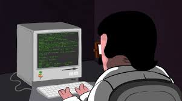

Eu gostaria de estar em alguma empresa grande criadora de jogos tipo uma Nintendo ou ate fazendo jogos sozinho sendo um desenvolver Indie mesmo que os desenvolvedores indies não tenham a mesma ''qualidade'' que jogos de empressa tem os jogos indies para mim tem uma magia porque mesmo sendo pequenos eles são o sonho dos desenvolvedores 🌐 um exemplo de jogo indie seria o Undertale feito pelo TobyFox e ate hoje TobyFox continua fazendo jogos fazendo meio que uma continuação de Undertale chamada de Deltarune 👨🏽💻. As minhas qualidades vão entre ter bastante foco quando eu realmente me interesso pela coisae quando eu to com foco eu me esforço muito para dar certo 🎮🕹️👾